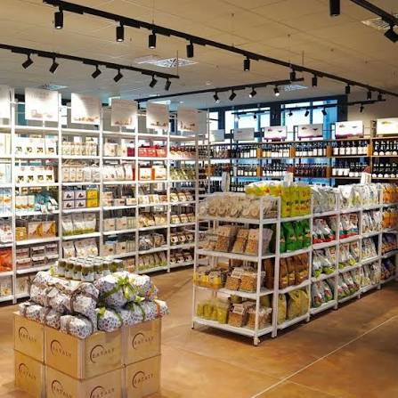
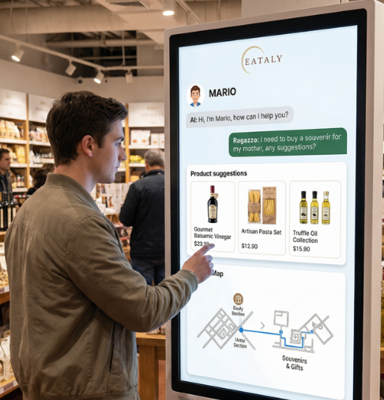

Eataly flagship store Milano Garibaldi
Omnichannel Innovation & AI Navigation
Modern consumers demand transparency that transforms ingredients from commodities into living narratives of heritage. We chose Eataly to bridge the gap between strong culinary tradition and the need for digital seamlessness.
Gen-Z recognizes Eataly’s cultural relevance but suffers from low purchase frequency and decision fatigue when navigating the complex physical store.

Our solution features AI totems that act as personal navigators. Technology acts as a silent assistant, personalizing the journey without becoming an intrusive barrier.

The experience begins pre-store with web browsing and pre-orders, moving into an exploratory in-store phase guided by AI and human interaction.

Retail transcends price wars to compete on trust. Products are no longer just goods, but carriers of culture.